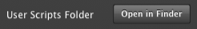

NSColor redColor set.-
Writing Pixel Scripts
-
Writing Pixel Scripts is an easy way to have your imagination displayed on a giant 12 foot by 8 foot LED wall the next time you're near the Pixel Heart ^_^
In order to test your scripts you'll want to set up the Pixel Pusher by following our Getting Started guide.
Pixel Scripts require some knowledge of programming but we'll walk you through the basics.
Finding the Scripts Folder
-
To start, let's open the User Scripts folder in the Pixel Pusher. To get there open the Prefs page and select Folders in the prefs list. Click the "Open in Finder" button next to "User Scripts Folder".

This is the folder where all of your custom scripts will go. When you add new scripts they'll automatically be loaded by the Pixel Pusher and added to the animation list. Any time you save a script the Pixel Pusher will automatically reload it for you, letting you change your animations in real time!
Modifying a Script
-
Let's start by modifying one of the sample scripts that come with the Pixel Pusher. Open
square.pixelscriptin any source code editor.While you're editing a script it can be helpful to see the results. Find the square.pixelscript animation in the animation list and select it so that you can see the four squares animating to the music.
We're going to start from scratch and rebuild this example, so delete everything in this file and then hit save. Your animation should now be a black box.

Drawing a Box
-
Before we can draw a box we need to change the current painting color. By default it's black, let's change it to red.
There are two painting colors that can be set that will affect all subsequent drawing: fill and stroke. To set one or the other you may use the methods
setFillorsetStroke, respectively. If you would like to set both then you can callsetas we do in this example. -
Now that we've set a painting color we can draw a rectangle on the screen. We use the
rendererobject to do things like draw rectangles and circles to the screen. In this case we're filling a rectangle that's 20 pixels wide by 10 pixels tall.(renderer fillRect:(0<>0 extent:20<>10)).
-
Here's what each of the numbers in the previous line of code mean.
(renderer fillRect:(x<>y extent:width<>height)).
-
NSColor redColor set. (renderer fillRect:(0<>0 extent:20<>10)).
-
Degraders
-
Reacting to music is as simple as one of the provided degrader objects. A degrader works like those little bars on old amplifier displays that get pushed up and then slowly fall back down.
In our case we have four degraders: one each for bass, hi hats, vocals, and snares. The value of these degraders is a floating point number from 0...1 that represents the amplitude of the respective instrument. The degraders' values fall back to zero at a velocity of one unit per second.
bassDegrader value hihatDegrader value vocalDegrader value snareDegrader value
-
For example, if the bass hits then the bass degrader value will be 1 and then fall back to 0 over the course of one second.
Making our Box Bounce
-
To make our box bounce it's a simple matter of using one of the degraders to modify the y position of the box.
(renderer fillRect:(0<>(bassDegrader value * 20) extent:20<>10)).